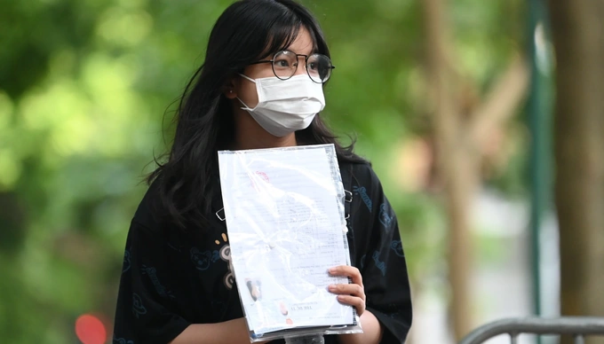

Những mốc thời gian quan trọng sau khi biết điểm thi tốt nghiệp THPT 2022
Ngày 24/7, Bộ Giáo dục và Đào tạo sẽ công bố điểm thi tốt nghiệp THPT 2022. Từ ngày 22/7 đến 17h ngày 20/8, thí sinh trên cả nước sẽ chính thức đăng ký nguyện vọng xét tuyển.Theo lịch tuyển sinh, từ ngày 10 - 22/7, các địa phương tổ chức chấm thi, ghép điểm thi, tổng kết công tác chấm thi, gửi dữ liệu kết quả thi về Bộ GD-ĐT, hoàn thành đối sánh kết quả thi. Ngày 24/7 công bố kết quả thi.
Từ ngày 22/7 đến 17h ngày 20/8, thí sinh trên cả nước sẽ chính thức đăng ký nguyện vọng xét tuyển.
Trong khoảng thời gian nói trên, thí sinh có thể đồng thời đăng ký, điều chỉnh và bổ sung nguyện vọng đăng ký xét tuyển không giới hạn số lần. Như vậy, số lượng nguyện vọng đăng ký xét tuyển của mỗi thí sinh cũng là không giới hạn.
Đây là năm đầu tiên thí sinh được đăng ký nguyện vọng xét tuyển đại học, cao đẳng sau khi đã hoàn thành kỳ thi tốt nghiệp THPT (các năm trước, thí sinh phải đăng ký xét tuyển đại học, cao đẳng đồng thời với việc đăng ký tham dự kỳ thi tốt nghiệp THPT).
Riêng với thí sinh tuyển thẳng, trước 17h ngày 21/7, các trường đại học hoàn thành công tác xét tuyển và thông báo kết quả cho thí sinh thuộc diện xét tuyển thẳng.
Danh sách thí sinh trúng tuyển theo hình thức này được cập nhật lên hệ thống của Bộ Giáo dục và Đào tạo và thí sinh xác nhận nhập học từ ngày 22/7 đến 17h ngày 20/8.
Với phương thức xét tuyển sớm, trước 17h ngày 21/7, các trường đại học hoàn thành công tác xét tuyển và thông báo kết quả cho thí sinh. Đồng thời, danh sách thí sinh đủ điều kiện trúng tuyển theo phương thức này được cập nhật lên hệ thống.
Năm 2022, cả nước có hơn một triệu thí sinh đăng ký dự thi tốt nghiệp THPT, trong đó có 860.000 thí sinh thi vừa để xét công nhận tốt nghiệp THPT, vừa xét tuyển đại học.
Sau khi kết quả thi được công bố, thí sinh muốn phúc khảo cần nộp đơn xin phúc khảo từ khi biết điểm đến hết ngày 3/8.
Hiện tại, hầu hết các tỉnh thành đã hoàn thành công tác chấm thi tốt nghiệp THPT 2022.
Sở GD-ĐT Nam Định cho biết, đơn vị này đang kiểm dò, báo cáo Bộ GD-ĐT tổng hợp, đối soát dữ liệu để công bố điểm thi, xét công nhận tốt nghiệp theo quy định.
Sở GD-ĐT Nam Định đã thành lập Ban chấm thi tự luận và Ban chấm thi trắc nghiệm với tổng số 61 thành viên. Ngoài ra còn có các lực lượng khác như Công an, bảo vệ, phục vụ, y tế...
Công tác chấm thi được thực hiện đúng quy định, quy chế và đảm bảo an toàn.
Ngày 19/7, Sở GD-ĐT Kon Tum đã hoàn thành công tác chấm thi tốt nghiệp THPT 2022 an toàn và nghiêm túc.
Đơn vị này cũng đang kiểm dò, báo cáo Bộ GD-ĐT tổng hợp, đối soát dữ liệu để công bố điểm thi, xét công nhận tốt nghiệp theo quy định.
Theo sở GD-ĐT TP Đà Nẵng, đến hết ngày 18/7, công tác chấm thi kỳ thi tốt nghiệp THPT năm 2022 tại Hội đồng thi này đã cơ bản hoàn tất.